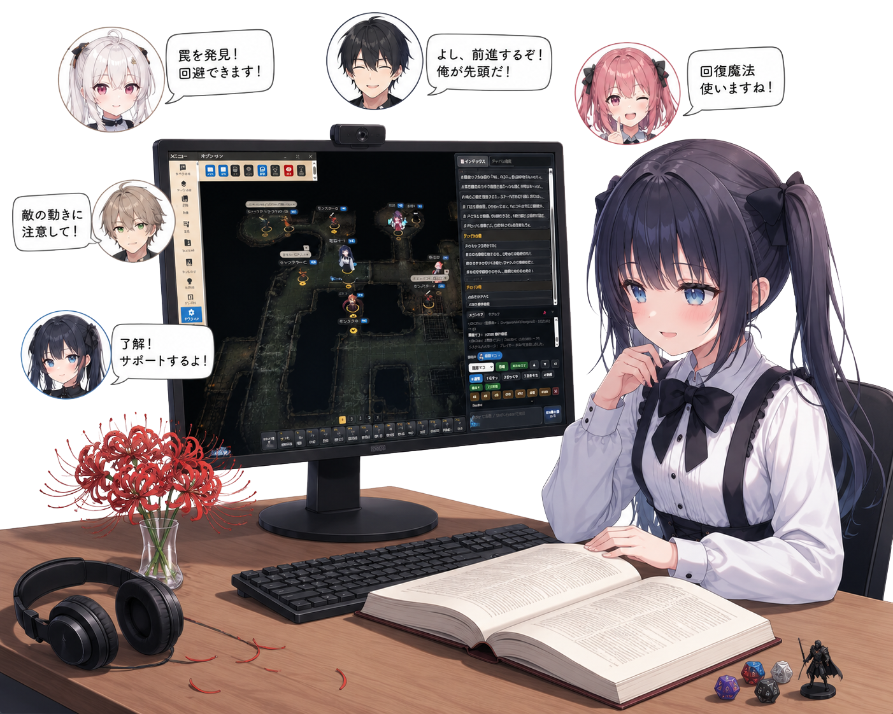

ブラウザだけで、どこでもTRPGのセッションを。
照明・音楽・コマ演出まで、こだわりヴィジュアルテーブルトップを目指して。
インストール不要。ブラウザを開くだけでTRPGのオンラインセッションが始められます。
松明・魔法の光・レーザー。壁による光遮断も再現する、こだわりの照明エンジン。
BGM・SE・環境音の3モード。雰囲気たっぷりのサウンドでセッションを盛り上げます。
ビジュアルノベル風の立ち絵表示。キャラクターの表情でシーンを彩ります。

15）、計算記法（c(8+{Artificer})）、独自ダイスボットコマンド（AR{敏セーヴ}>=0）、単純数式（8+5）に対応。BCDice → 固定値 → 数式 → 数値抽出の順でフォールバック評価{Artificer}の値が({知力}+{習熟})になっているような多段参照を最大32回ループで解決するよう修正unsafe:扱いされて表示されない問題を修正&!構文で自動計算バフをチャットから付与可能に。&!効果名/ステータス/操作/値/R/タイミング/トリガー名。VNチャパレ・通常チャパレ両対応。t&!でターゲット対象にも付与可能&!構文を自動生成するツールを追加。コピーボタン・チャパレ直接登録対応